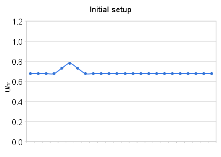
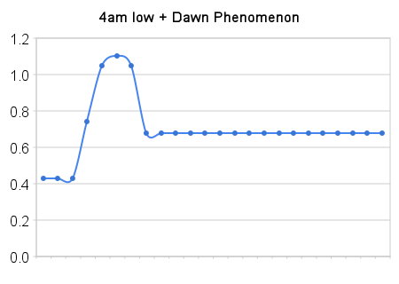

The Accu-Chek Combo is an insulin pump that has the potential to make really important changes to how I manage my diabetes and therefore my live. It'll allow me to change how much insulin I get when and so better match my body's needs.
Let's do the downsides first:
- It's a machine that I have to wear - always
- There are a lot of "fiddley" components and parts
- Configuring it to me is going to take a lot of time
There are going to be some upsides too of course:
- I can up the background rates by adjusting the insulin rate on an hour-by-hour basis
- The combined meter/advisor is a major improvement over previous devices
- I can record and analyse things like basal rates, insulin sensitivity, onset and durations
I got it last Friday (2009-10-16), and on that morning we'd (there were 4 of us receiving their Combos) helped each other programme our units. I was going to be on a 0.68 U/hr flat profile - though by the end of the day I'd made a small change to start counter-acting the severe case of dawn phenomenon that I suffer from.
Then there were a few details that happened on that first day:
- Went low by 4am (3.9) - therefore I want to have 1 U less between midnight and 4 am.
- Also, +0.2 is not enough to deal with the Dawn Phenomenon => up from 4 to 6 am by another +1U
Then smoothened out a little, I got this:



This chart shows a marked reduction between midnight (on the left) and three am, and a major increase between 3 and 6 am - to start countering the dawn phenomenon.
As an aside - that low-to-high swing from midnight to 6 am is simply not doable with insulin which is injected in the more "normal" or usual fashion. Different profiles are indeed possible, and for most diabetics they do cover their needs -but I don't fit into that category. This is why the Combo pump is so important for my control.
So - how did this work out?
Well - no hypo overnight so the first part was good. As it happened, my bedtime glucose was only 4.9 (below the DAFNE recommended 6.5 so I took an additional 10g carbs - so noy hypo-ing in that circumstance was really quite good.
And the second part was at least a partial success. For the first time in 6 months I had a proper lie-in - I didn't waken 'til 10 - which for me would have GUARANTEED me a glucose level of 17 or more - but this morning it was only 11.0. OK - so not perfect, and as the 1.8U given then wasn't enough to stop my glucose from rising to 12.2 by 11:37 I can see that I still need another 2U to be delivered before 9 (as it seems my sensitivity is at 3mmol/l per 1U) - but perhaps I'll take it a little more slowly than that at first!